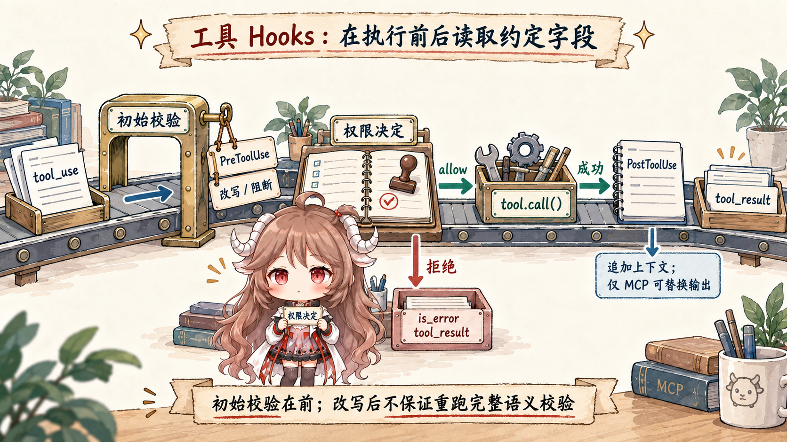
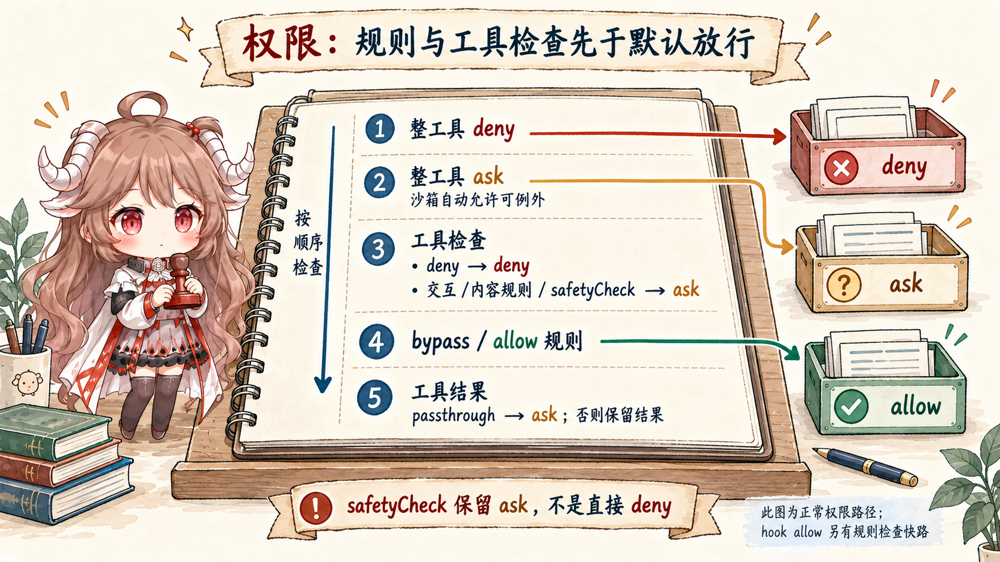

上一篇讲 subagent 时，已经碰到 SubagentStart、
SubagentStop 这些名字。它们不是孤立功能，而是 hooks 系统的一部分。
如果只把 hooks 当成“跑命令”，会错过一个更重要的事实：
hooks 是 Claude Code 在运行时边界上开放出来的可治理插槽。
本篇的主线很简单：先看 hook 事件和输入 schema 定义了哪些边界，再看
getMatchingHooks() 怎样把 settings、plugin、skill 和 session hooks 归并成待执行列表；
然后沿工具调用追 PreToolUse 与 PostToolUse，
最后把 UserPromptSubmit、SessionStart、Stop、
PreCompact 和 PostCompact 接回一次回合的生命周期。
阅读契约：这篇不做 hooks 配置教程，也不枚举所有事件。 我们只追四个 owner surface：输入关口、hook 匹配器、工具关口、stop/compact 关口。 读完以后，应该能回答三个问题：hook 的输出什么时候会进 model-visible context； hook 的 allow 为什么不是越权通道；Compact 为什么也要跑 SessionStart hooks。
证据边界先放清楚。产品层契约参考 Claude Code 的 hooks 文档； 源码层来自 Rememorio/claude-code 公开镜像。 本文只描述客户端公开源码可见的行为。服务端怎样调度模型、怎样实现更深层安全策略，不在本文推断范围里。
hook event
-> getMatchingHooks(settings, plugin, skill, session)
-> execute matched commands
-> parse stdout as protocol result
-> { decision, additionalContext, modifiedInput? }
PreToolUse runs before permission/execution.
PostToolUse runs after the tool result exists.
Stop and Compact run at turn or memory boundaries.一、先把 Hooks 放回一次回合里
Hooks 最容易被误读，是因为名字太像传统回调。回调通常让人想到“事件之后通知我一下”。
但 Claude Code 的 hook 事件表不是一串通知名，而是一张运行时边界表。
HOOK_EVENTS
里同时有 UserPromptSubmit、PreToolUse、PostToolUse、
PermissionRequest、SessionStart、Stop、
PreCompact、PostCompact、SubagentStart 这些名字。
它们分布在一轮任务的不同位置，不是同一种“事后通知”。
输入 schema 也在强调这一点。
BaseHookInputSchema
会给每个 hook 带上 session_id、transcript_path、cwd、
permission mode 和可选的 agent_id / agent_type。
工具类 hook 再追加 tool_name、tool_input、tool_use_id；
SessionStart 追加 source，Stop 追加 last_assistant_message，
PreCompact / PostCompact 追加 compact trigger 与 summary。
| 边界 | hook 看到什么 | 它能影响什么 |
|---|---|---|
UserPromptSubmit |
用户输入完成后的 prompt 文本。 | 阻断本轮查询，或追加 hook_additional_context。 |
PreToolUse |
工具名、工具输入、tool_use id。 | 改输入、追加上下文、给权限层一个 allow/ask/deny 候选。 |
PostToolUse |
工具名、工具输入、工具输出。 | 追加上下文，或只对 MCP 工具替换输出。 |
SessionStart |
启动来源：startup、resume、clear 或 compact。 | 注入初始上下文、初始用户消息、文件 watch paths。 |
Stop / Compact |
回合结束、压缩触发源和 compact summary。 | 决定是否继续、合并 compact 指令、在压缩后补回上下文。 |
所以第一层心智模型不是“某事件来了，执行脚本”，而是： Claude Code 在关键边界把当前运行时快照交给 hook，hook 返回一份受限输出， runtime 再决定哪些字段能进入下一步。
二、Hook 先被归并和匹配，才会执行
能不能跑 hook，第一步不是执行命令，而是归并配置。
getHooksConfig()
会从 snapshot、registered hooks、session hooks、session function hooks 里收集当前事件的候选项。
policy 开启 managed-only 时，plugin hooks 和 session hooks 会被跳过，避免非受管 hook 绕过策略。
2.1 匹配条件来自事件本身
归并后还要匹配。
getMatchingHooks()
会先为不同事件提取 matchQuery：工具事件用 tool_name，
SessionStart 用 source，compact 事件用 trigger，
notification 用 notification_type，subagent 事件用 agent_type。
这解释了为什么 hooks 配置里的 matcher 不是统一匹配同一个字段。
matcher 本身支持精确字符串、管道分隔列表和正则。
matchesPattern()
还会兼容 legacy tool name。
另外，if 条件
只在工具相关事件里求值，例如 Bash(git *) 这种条件要靠工具的 permission matcher 才能判断。
2.2 执行前还有信任与去重
getMatchingHooks() 会按来源去重 command、prompt、agent 和 HTTP hooks；
同一个命令在不同 plugin 或 skill 里不会被错误合并，同一来源里的重复项则会收敛。
真正执行时，
executeHooks()
还会先检查全局禁用、simple mode、workspace trust，再用主 session 或当前 agentId 查匹配列表。
这说明 hook 不是绕开运行时的后门，它自己也被运行时治理。
三、工具门：PreToolUse 不是 permission 的后门
工具路径最能说明 hooks 的真实位置。
模型在流里吐出 tool_use 后，Claude Code 不是立刻调用工具。
checkPermissionsAndCallTool()
会先准备一个给 hooks 和 permission 使用的输入副本，再执行 runPreToolUseHooks()。
这个位置在权限决策之前，所以 PreToolUse 可以改输入、要求阻断、追加上下文，也可以给出一个权限行为候选。

3.1 Hook allow 不会绕过 settings deny/ask
这里有个很容易误解的点：PreToolUse 返回 allow，不代表一定执行。
resolveHookPermissionDecision()
的注释直接写明了不变量：hook 的 allow 不会绕过 settings.json 里的 deny/ask 规则。
如果工具需要用户交互，或者运行时要求走 canUseTool，仍然会进入正常权限流；
如果规则检查命中 deny，deny 会覆盖 hook allow；如果命中 ask，仍然要弹权限询问。

3.2 PostToolUse 可以补上下文，但替换输出只限 MCP
工具执行结束后，runPostToolUseHooks()
会消费 executePostToolHooks() 的结果。它可以产出 blocking error、阻断后续继续、追加
hook_additional_context。
但 updatedMCPToolOutput 有一个明确限制：只有 isMcpTool(tool) 为真时才会生效。
工具执行层
也在同一位置把 MCP 输出替换后再写入 tool result。
这条限制很关键。Hook 可以参与工具结果进入下一轮之前的处理，但不会让普通内置工具随便替换掉自己的输出。 运行时在这里守住的是工具结果的来源和可解释性。
四、输出协议：stdout 要先被解释
Hook 最后当然要输出东西。但 Claude Code 看的不是“stdout 里有什么字”，而是“stdout 能不能解析成约定输出”。
syncHookResponseSchema 和 hookJSONOutputSchema
定义了可被 runtime 识别的字段：continue、stopReason、
decision、systemMessage，以及按事件区分的
hookSpecificOutput。
parseHookOutput()
的规则也很直白：stdout trim 后不是 { 开头，就按普通文本处理；
是 JSON 才会走 schema 校验。
校验后的结构进入
processHookJSONOutput()，
再被翻译成 HookResult：阻断继续、permission behavior、updated input、
additional context、MCP output replacement、retry 等都在这里生成。
command hook 还有一个非 JSON 的阻断信号： 执行结果处理 会先尝试解析 JSON；如果不是 JSON，状态码 0 走成功，状态码 2 表示 blocking feedback， 其他非零状态码则作为 non-blocking error 展示给用户。 也就是说，stdout 是载体，JSON 是主要的结构化协议，exit code 2 是命令 hook 的简洁阻断通道。
| 输出形态 | runtime 怎样看 | 典型后果 |
|---|---|---|
| 普通 stdout | 不是 JSON 时，更多是显示和记录材料。 | 不会自动变成权限决策或输入改写。 |
| command exit code 2 | 非 JSON 分支里的 blocking feedback。 | 生成 blockingError，阻断当前 hook 边界继续。 |
{"continue": false} |
被翻译成 preventContinuation。 |
当前边界阻断后续继续，可携带 stopReason。 |
PreToolUse.updatedInput |
进入工具执行前的输入替换路径。 | 要么跟随 allow/ask，要么以 passthrough 进入正常权限流。 |
additionalContext |
聚合成 hook_additional_context attachment。 |
可以进入后续 model-visible view。 |
{"async": true} |
被 async hook 分支识别。 | 同步边界不等到完整结果，但仍按 hook 执行状态记录。 |
多个 hooks 同时命中时，还要聚合。
executeHooks() 的结果归并
有一条关键优先级：permission behavior 按 deny > ask > allow 处理。
所以 hooks 之间不是谁最后输出谁赢，而是运行时按风险优先级归并。
五、Prompt、SessionStart、Stop、Compact 都在改边界
工具路径讲清楚后，再回头看非工具 hook，就更容易理解：它们不是工具钩子的旁支， 而是在另几个生命周期边界上做同样的事。
5.1 UserPromptSubmit 在查询前改输入边界
用户输入先走基础解析，再进入
executeUserPromptSubmitHooks()。
如果 hook 返回 blocking error，源码会返回一个 warning，并把本轮 shouldQuery 设成 false；
如果返回 preventContinuation，它会保留原 prompt 在上下文里的位置，但停止查询；
如果有 additionalContext，就转成 hook_additional_context message。
这一步说明 hook 可以在模型看见 prompt 之前改变本轮上下文。它不是“模型回答之后再通知脚本”， 而是 prompt gate。
5.2 SessionStart 不是只在进程启动时跑
SessionStart 的 source 有 startup、resume、
clear、compact。
processSessionStartHooks()
会加载 plugin hooks，执行 SessionStart hooks，然后收集 additionalContext、
initialUserMessage 和 watchPaths。
最后，额外上下文会变成一个 hook_additional_context attachment。
所以 SessionStart 不是狭义“启动回调”。resume、clear 和 compact 后的 session 重新进入可运行状态时， 它也可以把需要的上下文补回来。
5.3 Stop hook 管的是回合结束，不是工具结束
Stop 发生在回合末尾。
handleStopHooks()
会先构造 REPLHookContext，在主线程查询时保存 cache-safe params。
后面它还会启动一些回合结束的后台 bookkeeping，然后调用 executeStopHooks()。
Stop hook 如果阻断继续，会生成 hook_stopped_continuation，并把 summary message 回到消息流里。
这和 PostToolUse 的位置不同。PostToolUse 关心一个工具输出进入下一轮之前是否需要处理； Stop hook 关心这一轮 assistant 已经停住之后，是否允许整个运行时收口。
5.4 Compact 前后都有 hook
Compact 更能证明 hooks 是生命周期关口。
在 full compact 里，源码先发出 pre_compact progress，
然后执行
executePreCompactHooks()，
把 hook 产生的新指令合并进 custom instructions。
summary 生成完成、文件和工具相关 attachments 恢复后，
它还会以 compact 为 source 执行 SessionStart hooks。
最后再执行
PostCompact hooks。

这条链路解释了一个常见疑问：为什么 compact 后还要跑 SessionStart？ 因为 compact 后的模型视图已经不是原始长历史，而是一份 summary、boundary、恢复 attachments 和 hook messages 组成的新起点。 这个新起点需要重新接上 session 级上下文。
六、怎么用：把 hook 当运行时关口，不当万能脚本
到这里可以把 hooks 的使用规则压成一张表。
| 你想做什么 | 应该选哪个 hook | 要守住的不变量 |
|---|---|---|
| 在用户 prompt 进模型前补项目上下文。 | UserPromptSubmit 或 SessionStart。 |
补的是 model-visible context，不要伪装成用户原话。 |
| 工具执行前做参数清洗或风险拦截。 | PreToolUse。 |
updated input 要继续过工具 schema 和 permission。 |
| 把某个工具输出变成下一轮可读提示。 | PostToolUse。 |
追加上下文可以通用；替换工具输出只对 MCP tool 生效。 |
| 权限弹窗前自动给出 allow、ask 或 deny 候选。 | PreToolUse / PermissionRequest。 |
allow 不是越权，deny/ask 规则仍优先。 |
| 回合结束时做收尾或阻断继续。 | Stop / SubagentStop。 |
这是 turn boundary，不是单个工具 boundary。 |
| compact 前改总结指令，compact 后补上下文。 | PreCompact、SessionStart(compact)、PostCompact。 |
compact 后是新 model view，要重新安装必要上下文。 |
所以，Hooks 的关键不是“能跑脚本”。关键是 Claude Code 把脚本输出收进一份小协议， 再在每个生命周期边界只接受它该接受的影响。能补上下文的地方补上下文， 能改输入的地方改输入，能阻断继续的地方阻断继续，不能越过权限和工具合约的地方就不会越过去。
下一篇会继续沿这条“可继续运行”的线往后读： transcript、resume 和 session restore 为什么不是把旧聊天重新贴回窗口，而是恢复一套能继续执行的 runtime 状态。
参考源码与文档
- Rememorio/claude-code 公开镜像
- Claude Code hooks 文档
- coreSchemas.ts：HOOK_EVENTS
- coreSchemas.ts：Hook input schemas
- types/hooks.ts：hook JSON output schema
- hooks.ts：matcher and if condition matching
- hooks.ts：hook config merge and matching
- hooks.ts：executeHooks and aggregation
- toolExecution.ts：PreToolUse before permission
- toolHooks.ts：resolveHookPermissionDecision
- toolHooks.ts：PostToolUse hooks
- processUserInput.ts：UserPromptSubmit hook path
- sessionStart.ts：SessionStart hooks
- stopHooks.ts：Stop hook context and execution
- compact.ts：PreCompact, SessionStart(compact), PostCompact